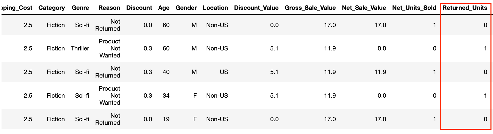

.png)


In this short tutorial we are going to look at stratified kfold cross validation: what it is and when we should use it. We’ll then walk through how to split data into 5 stratified folds using the StratifiedKFold function in Sci-Kit Learn and use those folds to train and test a model before exporting all the splits to csv files.
Stratified kfold cross validation is an extension of regular kfold cross validation but specifically for classification problems where rather than the splits being completely random, the ratio between the target classes is the same in each fold as it is in the full dataset.
Let’s look at an example. If we are building a model to classify images of cats and dogs and we have a data set that’s comprised of 75% cat images and 25% dog images, using stratified kfold cross valuation will mean that each fold we create remains close to this 75/25 ratio.
1. We want to preserve the class ratio of our target
2. We have relatively fewer training examples
Stratified kfold cross validation is typically useful when we have imbalanced data and where the data size is on the small side. Sometimes we will over or under sample our data to deal with class imbalance but other times we want to maintain the class imbalance when it’s representative of or contains some information about what we are trying to classify.
When the data is large enough we can still use regular kfold cross validation as this will often preserve the class ratios but this becomes less likely with fewer training examples.
For example, suppose we had a binary classification problem where one class accounted for 90% of the training examples but we had a million training examples. Here regular kfold cross validation would likely preserve the ratio between the classes. However, say we had only a thousand training examples for the same problem. In this case, it’s more likely that different folds would have different class ratios, especially with larger values of k and could even result in a fold containing training examples from just a single class.
Now that we understand what this method is and when to use it let’s have a look at how to implement it in Python using Sci-Kit Learn.
We are going to work with a dataset that tells us about products ordered from an e-commerce business: when they were ordered, who ordered them and if they were returned. Out intention is to build a model to predict whether a product that was ordered will eventually be returned. The dataset here is both small and imbalanced but we want to preserve that imbalance as it informs the model of the likelihood of a product being returned.
We are going to use a 5-fold cross valuation strategy and make use of Scikit-learn’s StratifiedKFold function to preserve the ratio between the classes in each fold.
Let’s start by importing Pandas and the StratifiedKFold function from SciKit-Learn. We’ll also read our data from csv into a DataFrame.
Our target here is the Returned_Units column which will be either 1 or 0.
Let’s have a quick check to see what the class ratio looks like for this column.
As you can see in our data, 21.6% of the time a product is returned. When we create our folds we want each split to have this same percentage of returns.
Let’s initialise a StratifiedKFold object and declare the number of splits we want, which in our case is 5.
When we perform the splits we’ll need to tell the function which column we are going to use as the target so let’s also create a series called target that contains the Returned_`Units data from our main data frame.
Now we are ready to use the function to create our folds. For this we’ll use a for loop and StratifiedKFold’s split operation to get the train and test row indexes for each split. We can then use these indexes to split our data into train and test dataframes. To start with we’ll just split our data and print the class ratio for each fold to check that they are all close to the full data set.
As is the case with regular KFold cross validation, each train split contains 4 folds while the test set contains a single fold so we use the test split to determine the class ratio for each fold. You can see that each fold’s class ratio is close to the full data set which is obviously what we want.
You might have also noticed that we have a variable called fold_no that increments on each loop. This is purely to label the folds when we print our output.
Now we have our folds setup we can extend the for loop to pass our train/test splits into a custom function that will train and test a model. Let’s train a simple logistic regression model using just two features, make predictions and print the accuracy for each of our folds.
First we import the libraries we require and initialise the model.
Next we’ll build a custom function that we can pass our data splits to for training and testing.
Finally let’s modify the for loop we created above to call the build_model function on each of our splits.
We now have the pipeline for training and testing using our stratified folds and therefore more complex models can be built by making changes to the train_model function.
An alternative to training and testing a model in the loop is simply to export the splits to file and then use them to train a model in another script or to use for some other purpose. Let’s see how we can make a few changes to our for loop to do this.
As you can see we now have 5 train and test files to work with as and when we need them.
For further detail on the Sci-Kit Learn StratifiedKFold function, you can view the documentation here.